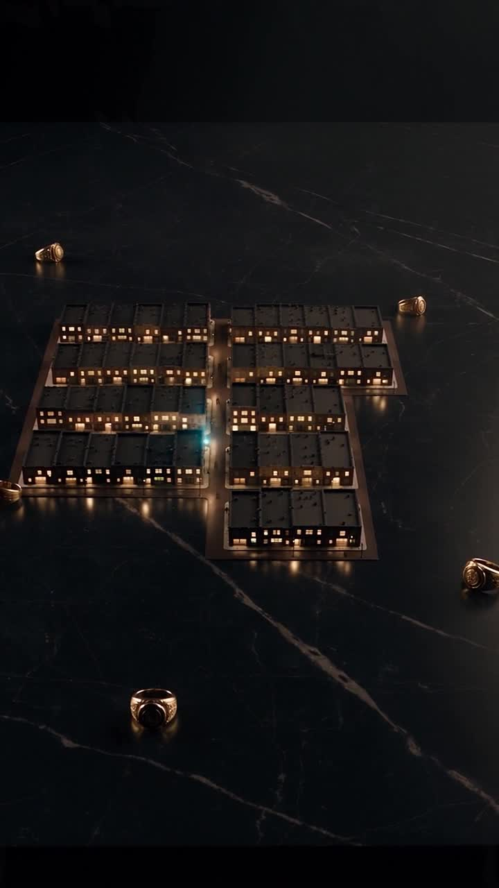

OMERTÀ / FAMILY TURF / CANDIDATE WALKTHROUGH
A season of fee rights.
Holding Turf means prospective rights to funded fees. The season determines when those rights begin, change and end.
Market candidate. This is a conceptual walkthrough, not a live season or earning opportunity.

The Family controls a claim.
The controller holds the liquidity principal. The authorized treasury receives funded credits. Game adjudication determines the typed ownership and siege outcomes accepted by the adapter.
Before anyone participates
The mechanism requires
A configured Family identity and treasury, a season and fixed range, valid lane bindings, authorized game settlement and actual fee funding. Syndicate splits can contain up to four Families and must total exactly 10,000 basis points.
The campaign must still specify
Public season activation, eligibility, the game’s acquisition/siege rules, any entry costs, and the confirmed lane configuration. These are not supplied by a generic “hold Turf” slogan; this guide invents none of them.
There is no guaranteed fee income. Trading activity, ownership changes, funded balances and configured siege allocations determine the relevant claims.
Source basis: the current repository documentation and implementation linked from the evidence room. Educational examples are not live transactions.